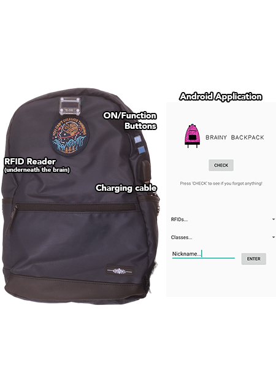
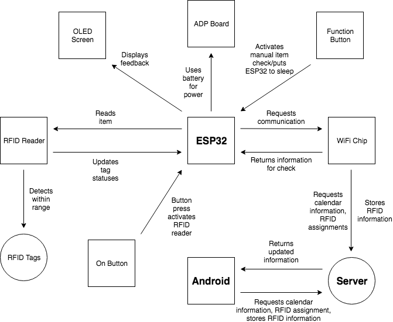
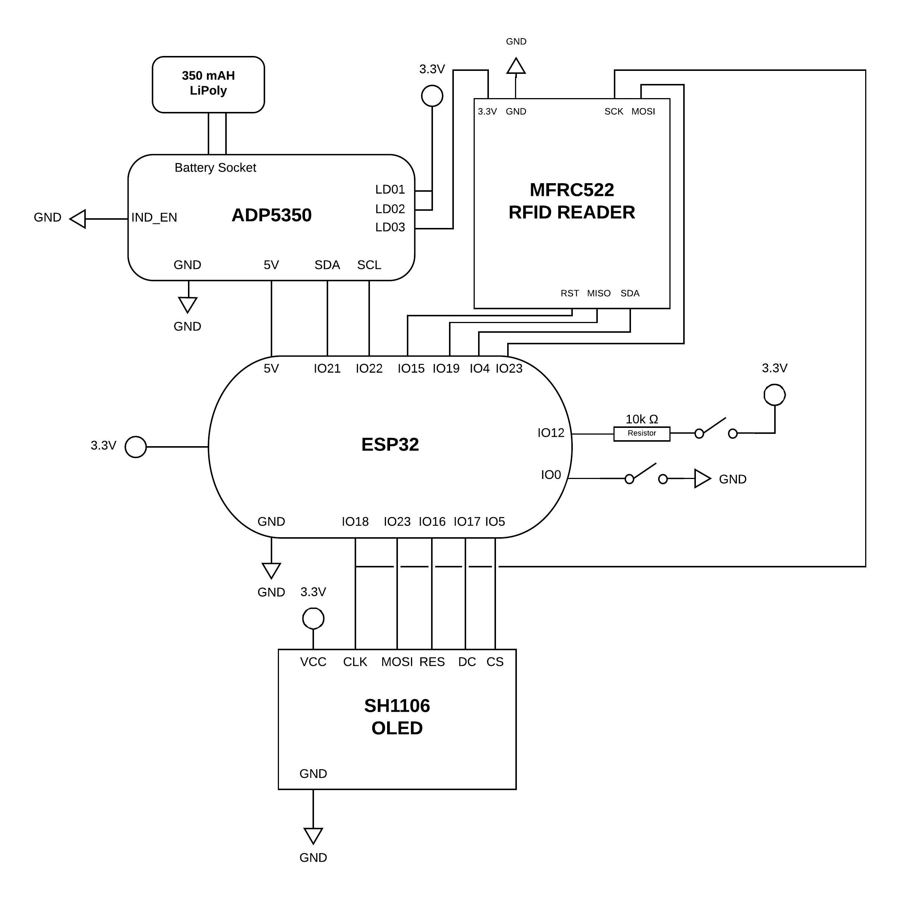
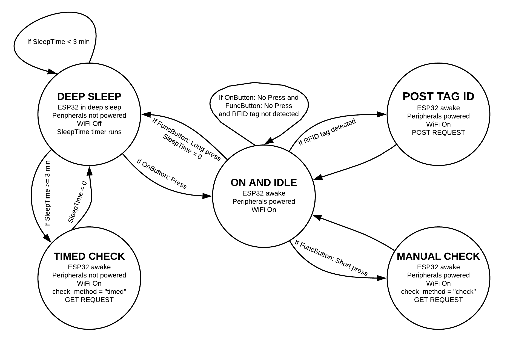
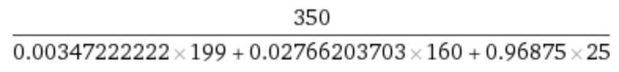

# Brainy Backpack
GitHub Organization: https://github.mit.edu/6-08DesignProject
As sleep-deprived MIT students, many of us sleep until the last possible minute and often forget to bring certain things to class in our rushed frenzy to get to class on time. Every student has experienced the feeling of horror as they reach into their backpack, only to realize they left it back at their dorm.
Thus far, students have had no defense mechanism against this and have suffered the academic and/or humiliating consequences of their forgetfulness. Our project, Brainy Backpack, aims to combat this. The Brainy Backpack is… well… a backpack with a brain - that is, a backpack that comes equipped with an RFID reader that is used in conjunction with a database and Google Calendar. Simply record your schedule with Google Calendar, attach small RFID stickers to items you need, and identify what they’re needed for using our Android application linked to your calendar.
Pressing a button on the backpack will let you know if you're ready to go. If you happen to forget to do that too, our backpack will alert you 30 minutes before your first class begins if you’re missing something via a push notification to your phone!
##The Birth of an Idea and its Growth
The original plan was to use longer range RFID technology associated with higher frequencies to intermittently read what RFID tags were inside the range of a standard backpack. We would check that each needed ID was inside the backpack by iterating over them. However, this would have been incredibly expensive. Additionally, multiple RFID tags in one area can interfere with readers. As such, we decided to have users manually scan items into and out of a backpack without loss of functionality.
Originally we wanted to create database that would act as a calendar and maintain information about what items would be needed on what days. The user would input/update this information through a mobile application. This was achieved by the second week, so we decided to pursue integration with Google Calendar instead. This proved to be one of the biggest challenges, largely due to authentication requirements for interfacing with the Google Calendar API. Google Client libraries that allow for streamlined user login and certification are not available on the sandbox server that hosts our scripts, so we had to perform OAuth 2.0 authentication using HTTP/REST calls - without using Flask, which again makes redirecting and certifying much easier.
We eventually got a system working using REST calls and a refresh token for fetching access tokens. We then performed authenticated Calendar API calls to the user's calendar. The remaining challenges with regards to the Calendar interfacing had to do with parsing the return values from Google. The datetime objects that are associated with events are in a fairly strange format, so stripping the information into datetime objects that can be properly compared with the current time was a challenge.
After figuring out the API, we worked on user notifications. Our original intention was to perform a check when the user would leave a certain area. We played with the idea of using GPS, but GPS readings were incredibly unreliable in our dorms. Joe suggested we use an IMU and check when a certain number of steps have been taken instead. This would require the IMU be on for short intervals of time in order to conserve power. Logically, this would mean that the IMU should be on before each of the user's class. However, if we were pulling class times from Google Calendar's API anyway, it would be contrived to have the IMU turn on and see if the user has taken a certain number of steps. If, after the check, the user was forgetting something, we wanted the backpack to scream at the user. However, we knew this could potentially be embarassing or disruptive, so Abhiti proposed using push notifications instead. This method would prove to be more reliable.
## Functionality Demonstration
<center>
<iframe width="560" height="315" src="https://www.youtube.com/embed/vPSD3MEdfaM" frameborder="0" allow="autoplay; encrypted-media" allowfullscreen></iframe>
</center>
The video starts off with the user scanning a new item for their 6.08 class: a beaver. They associate the new item, that has a new ID attached to it, with the class via the application. As they leave, we zoom in on a push notification that states "Uh oh! You've forgotten something!". They open the Brainy Backpack application and press the "Check" button to see what they are missing: a Rubik's cube for 6.08 class. The user then runs back, grabs the missing item, scans it, and leaves for class.
## The Final Product
<center>
<div id="cf">

<img class="top" src="./meme.png" />
</div></center>
<br>
<center>"this backpack is ugly, but it is ordered" - Joe Steinmeyer <br>
<font size="1" font color = "#ececec">Please hover over the image for more information</font>
</center>
##The Team
<center>
<div class="row">
<div class="column"> <br>
<font size="5">Abhiti Vaish</font><br>
Role: Android application
</div>
<div class="column"> <br>
<font size="5">McCoy Pati&ntilde;o</font><br>
Role: Server, databases, Google Calendar interfacing
</div>
<div class="column"> <br>
<font size ="5">Tran Nguyen</font><br>
Role: Hardware/ESP32 code and backpack
</div>
</div>
</center>
# The Server Side: Databases and Google Calendar
## Code Walkthrough:
###rfid.py
<b>URL:</b> http://iesc-s1.mit.edu/608dev/sandbox/mccoyp/rfid.py
<b>Functions:</b> <i>request_handler(request)</i>
The only function in the file. Everything is fetched, calculated, and handled within the request handler and is broken up into four main blocks of code, described below. The request handler accepts HTTP requests from the ESP32 and Android application, and carries out the appropriate actions according to the request type. If the desired database, <b>RFIDs.db</b>, does not exist, it is created. The table has five values for each entry: and identifying RFID (string), a nickname (string), an associated course/event (string), boolean (1/0) indicating if the item is in the backpack (int), and a timestamp.
<b>Code Blocks:</b>
<u>ESP32 POST Requests:</u>
```
if request['method'] == 'POST': # if POST request was made
if request['form']['device'] == 'ESP': # if POST request made by ESP32
.
.
.
```
(Rest of code can be found on our GitHub.) These requests are made when items are being checked in or out of the bag. The ESP32 sends a POST request with two parameters in the body: “device = ESP” and “rfid = [RFID of the scanned item as a string]”. Using the provided RFID, an attempt is made to fetch the table entry for that RFID. If the RFID was not in the table, an entry is made for the RFID but with no class or nickname associations. If it was previously in the table, the previous entry is replaced with a new one which has a flipped value for its location in reference to the bag. Using this new entry for the RFID, the location status is fetched and a return string is formed. Using the item’s nickname if possible, a string is returned indicating the location of the item.
<u>Android POST Requests:</u>
```
else: # if POST request made by Android
.
.
.
```
(Rest of code can be found on our GitHub.) Continued underneath code from block above. These requests are made when the user is altering associations between RFIDs and events/nicknames on the Android application. The Android device sends a POST request with three parameters in the body: “rfid = [RFID of a tag]”, “course = [name of event from calendar]”, and “nickname = [nickname of item attached to RFID tag]”. The RFID and course selections are limited to RFIDs that are stored in the database (ones that have been scanned before) and events that occur within a given timeframe in the user’s calendar (events that have <i>end times</i> within the last 30 minutes or have <i>start times</i> within the next week). The previous entry for the RFID in the table is deleted and replaced with new information, so that only one copy of each RFID is stored at any point in time.
<u>ESP32 GET Requests:</u>
```
if request['method'] == 'GET': # if GET request was made
.
.
.
if request['values']['device'] == 'ESP': # if GET request was made by ESP32
.
.
.
```
(Rest of code can be found on our GitHub.) These requests are made when the user performs a manual check by pressing a button on the backpack, and at 3 minute intervals for automatic timed checks by the ESP32 to see if items are missing for an upcoming event. To make a GET request from the ESP32, two parameters are required: “device = ESP” and “request = [“check” or “timed”]”. Whenever a GET request is made, the user’s Google Calendar needs to be accessed so that upcoming events can be compared with the contents of the user’s bag. On a separate script, <b>token.py</b>, a refresh token is used to obtain a valid access token to interface with the Calendar API, if a valid token does not already exist in the database. The token is stored with an RFID value of ‘8080’ - this “RFID” is filtered out when returning RFID statuses since it does not correspond to an RFID tag but is instead used for ease of persistent storage.
If an access token exists in the database but has expired, the API call that has its return dictionary stored in the variable test will contain a key of ‘error’. If we discover this erroneous response, <b>token.py</b> is called to fetch a new, valid token and the previous access token is replaced in the database. Once we have obtained a valid access token to make API calls with, we move on to the portion of code that specifically handles either an ESP32-directed call or an Android-directed call.
To fetch the events from the user’s calendar that fall within the previously specified time range, an API call is made via a GET request to the following URL:
https://www.googleapis.com/calendar/v3/calendars/mccoypatino@gmail.com/events?maxResults=2000&singleEvents=True&timeMin=" + str((datetime.datetime.utcnow() - datetime.timedelta(minutes=1000)).isoformat()) + "Z&timeMax=" + str((datetime.datetime.utcnow() + datetime.timedelta(minutes=10080)).isoformat()) + "Z&access_token=" + token
There are a number of parameters in the call that must be included in order to produce the desired response. The formatting of the call is set up according to the specifications found at the following URL: https://developers.google.com/calendar/v3/reference/events/list. The response is in the form of a dictionary, which we convert into a JSON object for indexing.
For each event returned, we convert its starting time into a Python datetime object in order to determine if the event occurs today. If it does, we append a tuple of ([event title], [starting time]) to a list of events of the day. After we’ve generated a full list of the day’s events, we determine what items the user is missing by looking up RFIDs associated with each of the day’s events. If any RFIDs are associated with items that are missing from the user’s bag, they are added to a list of missing items for each.
If the parameter “request” is set to “timed” a regularly timed check is being performed, so we need to check if any events are coming up within the next 30 minutes. If an event is in the next 30 minutes, we check if it has already been noticed by a timed check and if any items are missing from the bag. If our database does not contain an entry for the event and we’re missing items, a GET request is sent to “http://iesc-s1.mit.edu/608dev/sandbox/abhiti/designProj/sendFB.py” - which triggers a push notification to the user’s Android device notifying them that they have something missing from their bag. Additionally, the event has its name added to our RFIDs database with a nickname value corresponding to the event title. Again, this is clearly not an RFID but we store it so that we can have persistent memory of the fact that we’ve already notified the user prior to the event.
If an event is within the next 30 minutes but it exists in the database, we know that a notification prior to the event has already been sent - so, we do nothing. If an event’s start time has already passed - that is, the event has already started - it is now safe to remove the event from our database.
If the parameter “request” is set to “check” a manual check is being performed. We simply look at the array of missing items and if the length is 0, return a string to the user saying “You’re all set!” If the array is non-empty, we iterate through the missing items and return a string of “[Item nickname] for [event], … [repeat as necessary]... missing!“
<u>Android GET Requests:</u>
```
else: # if GET request was made by Android
.
.
.
```
(Rest of code can be found on our GitHub.) Continued underneath code from block above. These requests are made when the Android application requires a listing of claimed/unclaimed RFIDs and the events that will be occurring within the next week. One parameter needs to be passed: “device = Android”. After an API call like that for an ESP32-triggered check, a list is made of the events occurring today or in the next week. For each of the RFIDs in our database, we append them to a the “claimed” or “unclaimed” list by the basis of whether or not the RFID is associated with a class from our just-generated list. A return string is formatted as “claimed: [claimed list]; unclaimed: [unclaimed list]; events: [events list]” for parsing and use on the Android application side.
###token.py
<b>URL:</b> http://iesc-s1.mit.edu/608dev/sandbox/mccoyp/token.py
<b>Functions:</b> <i>request_handler(request)</i>
```
def request_handler(request):
parent = {"client_id":"703370653715-eurendm2cmthdm50o1d6tav49ii7lcub.apps.googleusercontent.com","refresh_token":"1/YSWVINzboGply1wn972l4DE7lkQKB5mTVhWZvIYNti8","grant_type":"refresh_token","client_secret":"D7_mx4wt2QEQl35MvoVQkQ2M"}
r = requests.post("https://www.googleapis.com/oauth2/v4/token", parent)
return r.text
```
The only function in the file. This script exists only to, when called, make a POST request in order to use a refresh token to fetch a valid access token in order to use the Calendar API. Request formatted according to specifications of: https://developers.google.com/identity/protocols/OAuth2WebServer.
##Code Interfacing
###ESP32 Usage:
####POST Requests:
Used during process of adding/removing items from bag
Simply switches value of location variable if RFID exists in table, or marks RFID as being in the bag if it’s the first instance and leaves nickname, course fields blank
<b>Parameters:</b>
- <i>rfid</i> (string) - RFID of item being scanned
- <i>device</i> (string) - Should be set to "ESP"
<b>Returns:</b>
- String containing scanned item's nickname (if one exists - otherwise "Unknown item") and "[removed from/placed in] bag"
####GET Requests:
Used during item checks
Performed in tandem with event check via Google Calendar
Database entries belonging to the classes returned by the Calendar fetch have their location values evaluated - user is notified accordingly
<b>Parameters:</b>
- <i>device</i> (string) - Should be set to "ESP"
- <i>request</i> (string) - Should be set to "check" if a manual (button) check is being performed. Should be set to "timed" if a timed interval check is being performed (to see if a timed alert should be issued via Android push notification)
###Android Usage:
####POST Requests:
Used to update RFID event/nickname associations
Possible event associations are fetched via Calendar by checking all event types in the user’s calendar - when user submits updates to RFID associations (done one at a time), updates are reflected in database
<b>Parameters:</b>
- <i>rfid</i> (string) - RFID of item having its association updated
- <i>course</i> (string) - Event to be associated with item
- <i>nickname</i> (string) - Nickname designated to item
- <i>device</i> (string) - Should be set to "Android"
<b>Returns:</b>
- String formatted as "[nickname] assigned to [event]"
####GET Requests:
Used to fetch claimed/unclaimed items and events
Performed in tandem with event check via Google Calendar
Possible event associations are fetched, and RFIDs are fetched from database. Based on whether event associations are present/up-to-date (that is, associations are made with events still in the schedule), RFIDs are marked as either claimed or unclaimed on app side
<b>Parameters:</b>
- <i>device</i> (string) - Should be set to "Android"
<b>Returns:</b>
- String containing string-converted lists of claimed items, unclaimed items, and events. Formatted as “claimed: [list of claimed items]; unclaimed: [list of unclaimed items]; events: [list of event titles]”
###Google Calendar Usage:
####Event Fetching:
Documentation URL: https://developers.google.com/calendar/v3/reference/events/list
Fetches list of events within specified calendar (listed Event return object documented here: https://developers.google.com/calendar/v3/reference/events#resource). Each event can have its details accessed directly from this list once converted to a JSON object (using json.loads([API return value]))
# The Backpack: Hardware and Power Management
The code can be found on our project's GitHub.
### System Block Diagram
<center>

</center>
### System Schematic:
<center>

</center>
<b>Parts list:</b>
- MFRC522 RFID Reader
- 13.56 MHz MIFARE RFID tags
- <s>Ugly</s> Backpack
<b>Base components used and misc:</b>
- ESP32 DevBoard Model C
- SH1106 1.3" Blue OLED Display
- ADP5350 Power Management board
- Lithium Polymer Battery (3.7V 350 mAH)
- 10.2 A external battery pack (used to power for extensive amounts of time; not included in power calculations)
- 2 Button switches
- Sewing kit
- Hot glue
- Patches
The ON button is connected to IO12 with a pull-up resistor, and the function button is connection to IO0. The buttons are wired and secured to the outside of the backpack in a place that would be convenient for the user. The backpack came with a USB port, which we wired to the ESP32 to charge the given battery. A rectangle was cut out of the front of the backpack, and the RFID was sewn into place. A patch that did not contain metal was then placed over the RFID, which does not hinder the RFID's read capability. An OLED was placed on the outside of the backpack, above the backpack.
### ESP32 State Machine Diagram
<center>

</center>
In order to implement the above state machine, functions written in previous exercises/labs were also used in the project. Functionality is noted below.
- pretty_print()
- Used to print what has been added/removed from the bag and whether or not everything is inside. If not, then it will print the list of missing items and their respective classes.
- start_WiFi()
- If the ESP32 is attempting to start_wifi during a timed check, it will not attempt to connect to WiFi more than once. The ESP32 will go back to sleep and try again the next time it awakes. Otherwise, the user is attempting to check manually, so the ESP32 will continually attempt to connect to WiFi.
- do_GET()
- If the GET request is sent via button press (manually), the status and the list of items missing will be displayed on the OLED.
- If the GET request is sent
- do_POST()
- Sends the NUID of the read tag to the database and prints what was added/removed to the OLED
- Button class
- This is used for the <i>Function</i> button connected to IO0.
- power_buttons()
- Implements the <i>Function</i> button functionality. A long press will shut the button down, and a quick press will trigger a manual GET request.
The setup function pseudocode is as follows. The actual code can be found on the github linked:
```
void setup() {
cause = how the ESP32 was awoken from deep sleep
if(cause != wakeup from timer){
setup button;
setup OLED;
set LDO3 voltage to 3.3V;
enable all LDOs;
initialize MFRC522;
authorize RFID reader with default token (0xFF);
}
set-up ESP32 to wakeup with a button;
set-up ESP32 to wakeup on every 3 minutes when asleep;
start_WiFi();
if(cause == wakeup from timer){
check_method = "timed";
do_GET();
put ESP32 into deep sleep;
}
}
```
The majority of the code was written in the loop function. The pseudocode is as follows:
```
void loop() {
power_buttons();
if (no RFID tag is detected){
return;
}
if (no RFID tag has been read){
return;
}
otherwise:
read the first 4 bytes of the ID;
cast the ID to a string and store to a variable to do_POST();
do_POST();
stops reading the card;
stops encryption;
}
```
### Power Management
For the overwhelming majority of the user's day, the ESP32 is in deep sleep with an RTC timer waking up the ESP32 every three minutes to connect to wifi, perform a check, then go back to sleep. As such, the power consumption is quite low and experimental voltage readings of the final product would have to occur over the course of, likely, several days.
Instead, we found power consumption values from the documentation of our RFID reader and found power consumptions estimations for each of the following components in previous lectures:
- <b><a href="https://www.elecrow.com/download/MFRC522%20Datasheet.pdf">MFRC522 RFID:</a></b>~9 mA
- <b>ESP32 DevBoard Model C:</b>
- On with wifi connected: ~160 mA
- Deep Sleep with RTC timer: ~5 &micro;A
- On the dev board, LED and serial communication chip stay on: ~25 mA
- <b>SH1106 OLED:</b> ~30 mA
To roughly calculate how long our 350 mAH battery will last after a full recharge, we estimated a typical day of usage:
In one day:
- 5 minutes of ESP32 in ON state (0.3472% of day):
- User will likely only be scanning items into backpack for ~1-2 minutes in the morning, and then perhaps between classes. This is supposed to be a slight overestimation.
- The rest of the day looping through Deep Sleep and Timed Check
- Performs 478 checks, assuming WiFi connects properly (at about 5 seconds per check, including WiFi connection time) 2.77% of day
- 1395 minutes in deep sleep (96.88% of day)
<center>

</center>
As such, using the above values, we estimate that the battery will last for 11.92 hours. So approximately half a day, which isn't ideal, since the microcontroller still powers the LED and serial communication chip in deep sleep. If we had an ESP32 board that did not have the other components powered in deep sleep, the battery would for a much longer time (~ 68 hours). In any case, the user should be able to make it through a standard class day with current power consumption.
#The Android App
Compatible with Android Ice Cream Sandwich (4.0) up to Oreo (8.1).
##Purpose
In order to maximize the functionality of Brainy Backpack, we also created an Android app that the user can make use of. The app has four major fuctions as follows:
1. Assignment of a new RFID to a specific item for a particular course
2. Reassignment an RFID that is currently associated with some other item and course, to a new item and course
3. Notification for an item that is not present in the bag, but is necessary for some event in the next 30 minutes
4. Manual check if the user forgot anything necessary
The following elucidates the use cases for the above functionality:
###(re)Association Process
-Functions 1 & 2-
<center>
<img src = "./2018-05-16 19.30.08.png" width=200 />
</center>
The user has just obtained a new RFID sticker/tag/card that they wish to associate with an item for a certain class.
The user physically combines the RFID with the item and scans the item using the Brainy Backpack. When the scanning is completed,
the OLED on the Brainy Backpack will notify the user that an unknown item was added to the bag. As such, this RFID will be added
to the Brainy Backpack database as an "unclaimed" RFID. The user can then open the Brainy Backpack app on their Android device
and press on the RFID dropdown menu, which lists all associated RFIDs with the backpack. The claimed RFIDs will be listed as the
number, simply, whereas the unclaimed RFIDs have an asterisk next to the number. As such, in order for the user to be able to accurately
identify new RFIDs, it is imperative that they scan and associate unclaimed RFIDs one at a time.
<center>
<img src = "./2018-05-16 19.30.18.png" width=200 />
</center>
After selecting the apprioriate RFID, the user can then select the appropriate course from the course dropdown menu. The course dropdown is linked to the user's
Google Calendar account, and shows all events that are present in the current week, on their calendar.
After selecting the apprioriate RFID, the user can then select the appropriate course from the course dropdown menu. The course dropdown is linked to the user's
Google Calendar account, and shows all events that are present in the current week, on their calendar.
<center>
<img src = "./2018-05-16 19.30.24.png" width=200 />
</center>
Next, the user can type in a nickname to associate with the RFID (usually something more memorable than a semi-random string
of integers that is an RFID).
<center>
<img src = "./2018-05-16 19.30.45.png" width=200 />
</center>
To finally associate the item, the user must press ENTER.
<center>
<img src = "./2018-05-16 19.31.11.png" width=200 />
</center>
The following code from MainActivity.java shows the process from which the unclaimed RFIDs are parsed
from the response from a GET request to rfid.py and then inserted into a dropdown menu in the app.
A similar process is carried out to add claimed RFIDs and courses.
```
//add all unclaimed RFIDs to spinner (with * since unclaimed)
String rfidAdd = "";
for (int j = st; j < unclaimedstr.length();j++){
if (unclaimedstr.charAt(j) == '\'){
if (rfidAdd != ""){
rfidAdd += "*";
categories.add(rfidAdd);
rfidAdd = "";
}
}else if (unclaimedstr.charAt(j) != ',' && unclaimedstr.charAt(j)!=' ') {
rfidAdd += unclaimedstr.charAt(j);
}
if (unclaimedstr.charAt(j) == ']'){
break;
}
}
```
Finally, a POST request is made to rfid.py in order to carry out the (re)association.
```
public void onClick(View v) { //when ENTER is clicked
final RequestQueue POSTq = Volley.newRequestQueue(MainActivity.this); //start POST volley RequestQueue
StringRequest sr = new StringRequest(Request.Method.POST, rfid_url, new Response.Listener< String >() {
@Override
public void onResponse(String response) {
update_txt.setText(response);
POSTq.stop();
}
}, new Response.ErrorListener() {
@Override
public void onErrorResponse(VolleyError error) {
update_txt.setText("ERROR in POST");
error.printStackTrace();
POSTq.stop();
}
}){
@Override
protected Map< String, String > getParams() throws AuthFailureError{
Map< String, String > params = new HashMap < String, String >();
String rfstr = spinner.getSelectedItem().toString();
if (rfstr.charAt(rfstr.length()-1) == '*'){
rfstr = rfstr.substring(0,rfstr.length()-1);
}
//parameters needed for server-side POST
params.put("rfid",rfstr);
params.put("course",spinner2.getSelectedItem().toString());
params.put("nickname",nickname.getText().toString());
params.put("device","Android");
return params;
}
};
POSTq.add(sr);
```
###Push Notifications
-Function 3-
<center>
<img src = "./2018-05-14 02.27.47.png" width=200 />
</center>
In the context of Brainy Backpack, "forgotten" is defined an item not being present in the bag. As such, if the user has forgotten at least
one item that is necessary for an event that is going to take place in the next half hour, they will get a push notification that they have forgottten something.
By clicking on the notification, the phone will open the app, and the user is able to press CHECK in order to see what all they left behind,
with sufficient time to be able to grab the item and go to class.
All push notifications are carried out using Firebase. Whenever a necessary item is identified as being needed in the upcoming half hour,
but is not in the bag, rfid.py sends a GET request to a script that fethes the Firebase token associated with the app (which is stored on
a SQLite database) and triggers the push notification via Firebase. Each time the user opens the app, a fresh token is obtained from Firebase,
and send to the SQLite database. As such, the token that is used in the push notification will never become stale.
The following code, from MainActivity.java, shows the token POSTing process.
```
SharedPreferences sharedPreferences = getApplicationContext().getSharedPreferences(getString(R.string.FCM_PREF), Context.MODE_PRIVATE);
String ff = FirebaseInstanceId.getInstance().getToken();
String token = sharedPreferences.getString(getString(R.string.FCM_TOKEN),ff);
Map<String, String> params = new HashMap<String, String>();
params.put("token",token); //POST token
return params;
```
Finally, this token is then accessed on the server and a POST request is made to Firbease as such (code found in databases > sendFB.py on GitHub):
```
def request_handler(request):
conn = sqlite3.connect(visits_db) # connect to that database (will create if it doesn't already exist)
c = conn.cursor() # make cursor into database (allows us to execute commands)
t = c.execute('''SELECT token FROM fr ORDER BY time DESC;''').fetchone()
token = str(t[0])
serverKey = 'key=AAAA2jmcyUg:APA91bGvHnGTkpUjAs3mc83__bXcpsboAWCdfHmgupgKMbiqUINbi5ZnpBEXDIA3Piho02QEUtid_DymXTYHkJVaqYk38HfmuS0CuQ2GeYt6huyhwhFEIo42f6X9TbdqfA4prJ2mPbjv'
header = {'Authorization':serverKey,'Content-Type':'application/json'}
fields = {'to':token,'notification':{'title':'Uh oh','body':'Looks like you forgot something!'}}
r = requests.post(url = 'https://fcm.googleapis.com/fcm/send', headers = header, data = json.dumps(fields))
conn.commit() # commit commands
conn.close() # close connection to database
return [token,r.text]
```
###Check
-Function 4-
<center>
<img src = "./2018-05-16 21.06.11.png" width=200 />
</center>
If the user wishes to carry out a manual check for the items that they need, with respect to the items in the Brainy Backpack,
the app will notify the user of the state of the backpack. If the user has all of the items that they need, the screen will look like the above!
The code that corresponds to the check is as follows:
```
public void onResponse(String response) {
String respstr = "You are missing:\n>";
if (response.equals("You're all set!")){
respstr = response;
textView.setText(response);
} else{
//parse to list all items missing as bullet list
for (int y = 0; y < response.length()-8;y++){
if (response.charAt(y) == ',') {
respstr += "\n>";
y++;
} else {
respstr += response.charAt(y);
}
}
textView.setText(respstr);
}
```
##State Machine
<center>
<img src = "./statemachine.png" width=300 />
</center>
Above is the state machine for the Android app. When app is downloaded on the phone, but is not open, it is in the Background state.
If the user presses the icon to open the app, or opens the app due to a push notification, that app switches to the Active state.
In Active, the user can carry out an item check, as well as item (re)assignment. By shutting the app, the app switches to Background.
##Future Work
There are several steps that can be taken in order to make Bariny Backpack more robust.
###Scalability
In order to scale Brainy Backpack, allowing it to be used by multiple users, we would need each user to create an account,
which associates their specific Google Calendar account and associated items with their physical Brainy Backpack. This is
a natural next step to take, in our project, as we want to ensure that users only get notifications for their courseload
(and nobody else's), and can keep their data separate from others.
###Security
As a project grows, and more users put their trust in a system, it is improtant for the system designers to secure their users' data,
unless they would like to go on trial to explain the internet to all of Congress. As such, as we grow, we would want to encrypt all
RFID and item associations that the user stores with Brainy Backpack. Additionally, to prevent any playback, "person"-in-the-middle,
and other attacks, it is crucial to encrypt all messages that are sent from our server to the each user and vice versa. RSA encryption would be our
go-to encryption method.
###User-Friendliness
Sometimes it is useful for a user to sync their roommate or significant other's Brainy Backpack accounts with their own, in order to
add another layer of fault-tolerance against forgetting some crucial item at home. As such, in the future, we would like to allow a user to
integrate another user's account such that both people will get push notifications to their phones.
Additionally, adding a webapp would be very helpful for a user to carry out a manual check through their laptops, such that they are not
tied exclusively to their phones.
###Current Associations
Another functionality that would be useful for the app to display the RFIDs that correspond to current associations, such that they can
reassociate RFIDs without having to search for the number.